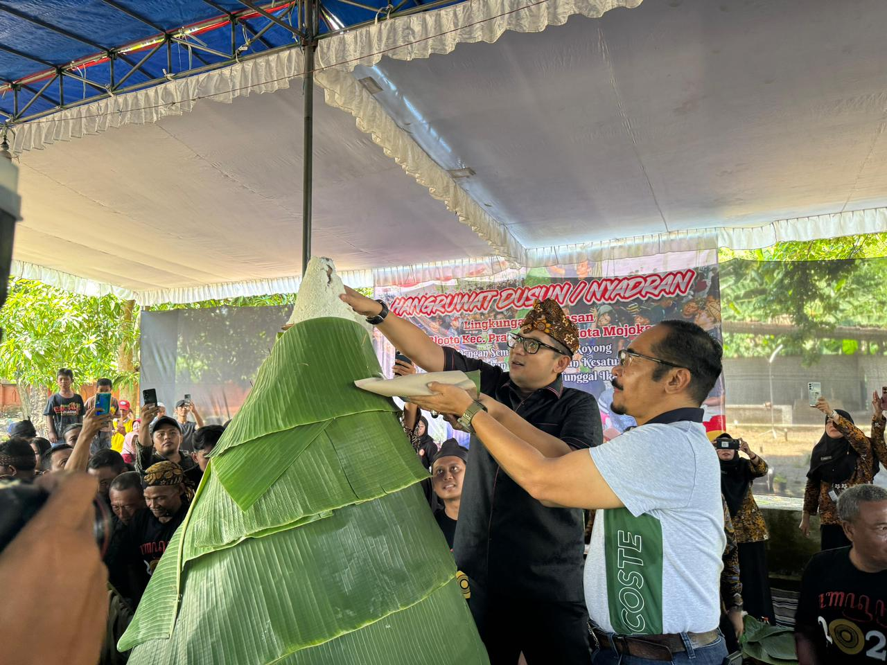
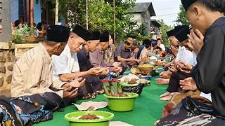

Mojokerto, sebuah kabupaten di Jawa Timur, memiliki berbagai kebiasaan adat yang mencerminkan warisan budaya leluhur, terutama dengan pengaruh dari Kerajaan Majapahit. Tradisi yang cukup dikenal antara lain adalah Sedekah Bumi, yang dilakukan sebagai wujud rasa syukur masyarakat atas hasil panen. Upacara ini biasanya diadakan setiap tahun dengan doa bersama dan pembagian hasil bumi. Selain itu, ada juga tradisi Nyadran, yang digelar menjelang bulan Ramadan, di mana masyarakat melakukan ziarah ke makam leluhur sambil membawa sesaji sebagai bentuk penghormatan dan permohonan berkah.
Upacara Tedhak Siten menjadi bagian penting dalam kehidupan anak-anak di Mojokerto, di mana anak yang mulai belajar berjalan diperkenalkan dengan tanah sebagai simbol kemandirian. Selain itu, ada pula tradisi Ruwatan, yang diyakini dapat membersihkan seseorang dari kesialan, serta Larung Sesaji yang dilakukan di sekitar sungai sebagai bentuk penghormatan dan rasa syukur terhadap alam.

Setiap tahun, Mojokerto merayakan hari jadinya dengan serangkaian acara adat dan budaya. Pawai budaya, pertunjukan seni tradisional, dan prosesi upacara yang melibatkan berbagai elemen masyarakat menjadi bagian penting dari perayaan ini. Acara ini tidak hanya menjadi ajang untuk melestarikan budaya, tetapi juga mengingatkan masyarakat akan sejarah panjang Mojokerto, yang pernah menjadi pusat peradaban Majapahit.

Sedekah Bumi merupakan tradisi yang dilakukan sebagai bentuk rasa syukur kepada Tuhan atas hasil bumi yang melimpah. Masyarakat Mojokerto menggelar acara ini setiap tahun, biasanya setelah musim panen. Upacara ini melibatkan doa bersama, penyembelihan hewan, dan pembagian hasil bumi kepada masyarakat. Acara ini juga menjadi ajang silaturahmi antarwarga.
Kebiasaan adat lainnya yang menonjol adalah peringatan Hari Jadi Mojokerto, di mana berbagai acara adat dan budaya diadakan, termasuk pawai budaya dan pertunjukan seni tradisional. Semua tradisi ini menggambarkan betapa pentingnya nilai-nilai leluhur, kebersamaan, serta penghormatan terhadap alam dan para pendahulu bagi masyarakat Mojokerto.